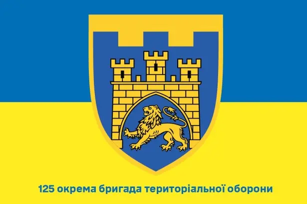

Думанський Павло
Спортсмен кіокушинкай карате
Народився 2003 року у Львові
Спортсмен СК "Канку"
24-та окрема механізована бригада імені короля Данила
Спогад про героя
Самурай усе життя був воїном та лікарем. Після 2014 року, коли пішов захищати кордони Батьківщини, став військовим медиком. Він вмів усе: і роди прийняти, і реанімацію провести. Брав свій медичний рюкзак і йшов у села “сірої зони”, щоб допомагати людям.
Олександр був дуже різносторонньою людиною: захоплювався бойовими мистецтвами, книгами, вишивкою, створював реабілітаційний центр у Волновасі.
Загинув 7 квітня 2022 року під час обстрілу поблизу Попасної. Важкопоранений, підірвав себе гранатою, щоб не дати ворогу пройти. Пам’ятаємо подвиг героя.